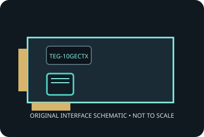

[ MODEL-SPECIFIC NETWORK HARDWARE ]
TRENDnet TEG-10GECTX 10GBASE-T PCIe Adapter
Single-port PCIe NBASE-T copper network adapter. Record applies to the exact SKU named here; verify the physical label and revision.

IDENTIFICATION: Product label: TEG-10GECTX. Link rates are nominal negotiated signaling rates, not measured throughput.
Specifications and OS compatibility
| Catalog subcategory | Ethernet adapters |
|---|---|
| Exact product SKU | TEG-10GECTX |
| Controller | Tehuti Networks TN4010 Ethernet controller, as specified for the TEG-10GECTX product family. |
| Bus, lane and port interface | PCI Express 3.0 x4 add-in card; one RJ-45 copper port. |
| Ports and media | 1 port(s); 10GBASE-T interface. |
| Nominal line rate (not measured) | 10, 5, 2.5, 1 Gb/s and 100 Mb/s nominal per port; actual negotiated rate depends on cabling and link partner. |
| Operating systems and drivers | TRENDnet provides OS-specific driver downloads for supported Windows and Linux configurations; check the TEG-10GECTX support page for the exact OS release and revision. |
| Compatibility notes | Requires a PCIe x4 electrical slot and compatible 10GBASE-T peer. Cat 6A is recommended for 100 m at 10GbE; shorter Cat 6 runs may negotiate 10GbE. Not a guarantee of tested payload throughput. |
| Measured throughput | No physical specimen benchmark is claimed. A meaningful result must identify host, peer, link partner, media, driver/firmware, traffic pattern, test tool and duration. |
Model and revision notes
Requires a PCIe x4 electrical slot and compatible 10GBASE-T peer. Cat 6A is recommended for 100 m at 10GbE; shorter Cat 6 runs may negotiate 10GbE. Not a guarantee of tested payload throughput.
Confirm exact card revision, device ID, transceiver/cable type, host firmware, bracket and driver build before installation. Use vendor qualification data for server/NAS deployment.
Preservation and measurement notes
Record card revision, controller marking and driver/firmware versions. Power down before installation; handle by edges and store in ESD shielding.
No measured throughput is represented by the nominal line rate. Record peer, media, negotiated rate, traffic pattern, test tool and duration for any future benchmark.
Manufacturer sources and documentation
- TRENDnet TEG-10GECTX product pageManufacturer product specifications and model identification.
- TRENDnet TEG-10GECTX support/downloadsManufacturer driver and documentation access for this model.
- TRENDnet product datasheetManufacturer-hosted product specifications; see downloadable datasheet on the model page.
Manufacturer documentation takes precedence for exact SKU, board revision and platform qualification; controller-family data alone does not establish card compatibility.